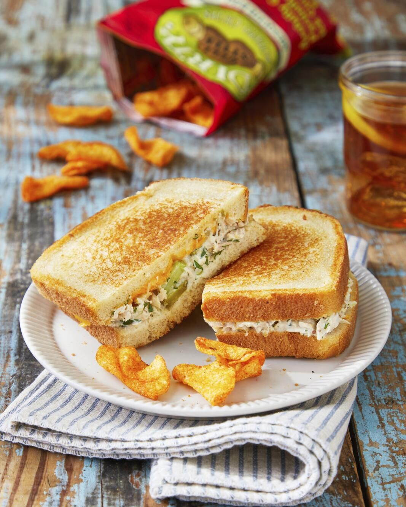

Tuna Melt

Description
The underrated tuna melt, that staple of diners and lunch plates everywhere, deserves to be making a big time comeback.
Ingredients
- 2 (5-ounce) cans chunk white tuna, drained
- 1 celery stalk, chopped
- 1/3 c. chopped fresh flat-leaf parsley
- 1/3 c. chopped fresh dill
- 2 scallions, thinly sliced
- 1 tbsp. fresh lemon juice
- 1/2 c. mayonnaise
Steps
- Combine tuna, celery, parsley, dill, scallions, lemon juice, mayonnaise, cornichons, pickle relish, and mustard in a bowl. Season with salt and pepper.
- Place bread on a work surface and spread 1 tablespoon mayonnaise on each. Turn 4 slices over, and top with Tuna Salad and Cheddar, dividing evenly. Season with salt and pepper. Sandwich with remaining bread, mayonnaise sides up.
- Cook, in two batches, in a large nonstick skillet over medium heat, turning once, until golden brown and cheese is melted, 12 to 14 minutes.